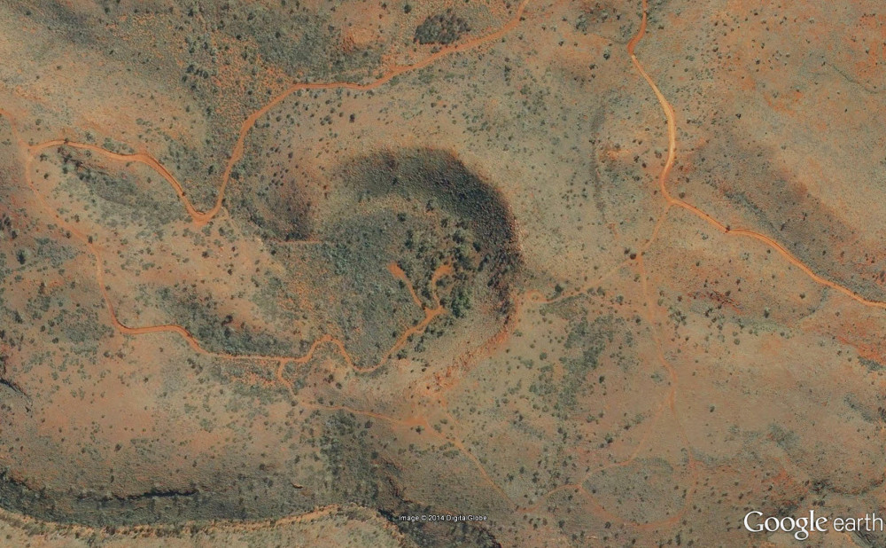
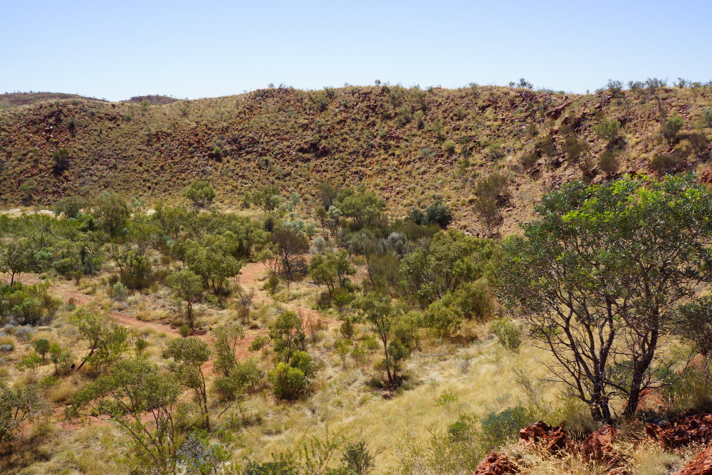

The Hickman Crater is located in the Pilbara region of Western Australia. It is located at 119 deg 41 min east and 23 deg 02 min south on the Newman SF50-16 1:250 000 mapsheet and the Newman 2851 1:100 000 mapsheet. The crater was first recognised as a possible impact structure by Arthur Hickman (GSWA) in July 2007 while studying Google Earth images of the area. The information summarised below has been derived from Bunting (2012) and Haines (2014).
In 2012, the Meteoritical Society hosted a field excursion to some of the WA craters and impact sites, and the extract for the Hickman Crater visit can be found here.
Landgate aerial photography over the Hickman Crater (from Locate - WA Land Information Application)
Oblique aerial view looking north east over the Hickman Crater (Locate/Landgate)
Location map for the Hickman Crater (source 1:250 000 topographic map series)
The crater is almost circular with a rim diameter of 250 - 270 m with a drop of about 20 - 30 m to the crater floor. Bedding and layering in the bedrock has been steepened, disrupted and locally overturned. An interpreted ejecta blanket comprised of angular fragments of rhyolite form an apron around the crater, with isolated fragments up to 300 m north of the crater. The age of the crater has not been determined to date but Ar-Ar dating is planned on impact glass recovered during the recent drilling program in the crater. Preliminary ages suggest between a few tens of thousands to one hundred thousand years old. A diamond drill hole was drilled into the crater in 2012 to a depth of 64.7 m and intersected about 30 m of alluvial crater infill, overlying about 18 m of crater infill, 11 m of polymict brecia overlying shattered bedrock rhyolites (Haines 2014).
View of the north and eastern rim of Hickman Crater from near the "LetterBox". Note the flat alluvial filled centre to the crater. Photography by G Boxer April 2014.
The crater rim is about 80% preserved and comprises mainly uplifted rhyolite (Glikson et al 2008). Geothite veins with alteration zones can be found cutting the rhyolite and are interpreted by Glikson et al (2008) to be caused by high pressure fluidised Fe-rich aqueous hydrothermal fluids. Geochemical analyses of these geothite viens do not indicate any contribution from meteoritic material but their localisation near to the crater suggests hydrothermal activity caused by the impact. The projectile was interpreted to be about 10 m in diameter and of iron composition. Drill samples of possible impact melt collected from drilling into the crater indicated elevated nickel, copper, gold and platinum group elements (PGE) consistent with an iron type of meteorite.
Visitors to the Hickman Crater usually access the area from the north using the BHP railway access road. Permits to use this road can be easily obtained from the Newman Visitors Centre. They can also supply maps and additional information (see here).
Drill cross section of the Hickman Crater (Haines 2014)
Geological log of HKDH001 in Hickman Crater (Haines 2014)
Digital Elevation Model of the Hickman Crater (derived from GSWA survey 70787)
Total Magnetic Intensity of the Hickman Crater (derived from GSWA survey 70787). Note the weak magnetic high over the crater floor.
References
Bunting J. 2012. Hickman Crater, In: Western Australian Impact Craters, Field Excursion, 20-29 August 2012. Excursion Guidebook for the 75th Annual Meeting of the Meteoritical Society, Cairns, Australia, 2012.
Glickson A Y, Hickman A H and Vickers J. 2008. Hickman Crater, Ophthalmia Range, Western Australia: Evidence Supporting a Meteoritic Impact Origin. Australian Journal of Earth Sciences, vol. 55, p 1107-1117.
Hickman A H, Glikson A Y and Vickers J. 2008. A Newly Discovered Meteorite Impact Crater, Ophthalmia Range, Western Australia. Geological Society of Australia, Abstracts No. 89, p. 133-134.
Haines P W. 2014. Collaborative Scientific Drilling at Hickman Crater. GSWA extended abstracts 2014, Record 2014/2, p. 1-4
Other Impact Sites of Western Australia
Glikson
Gnargoo
Goat Paddock
Ilkurka
Lennis
Neereno Hill Possible Impact Structure
Piccaninny
Skirmish
Spider
Veveers
Woodliegh